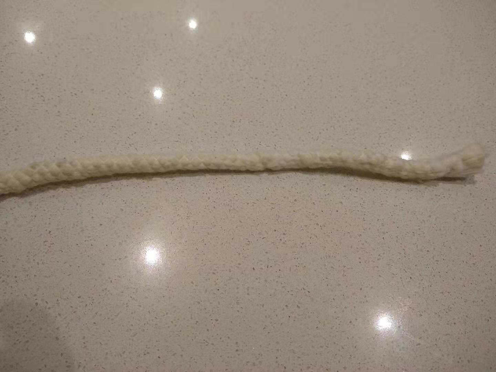
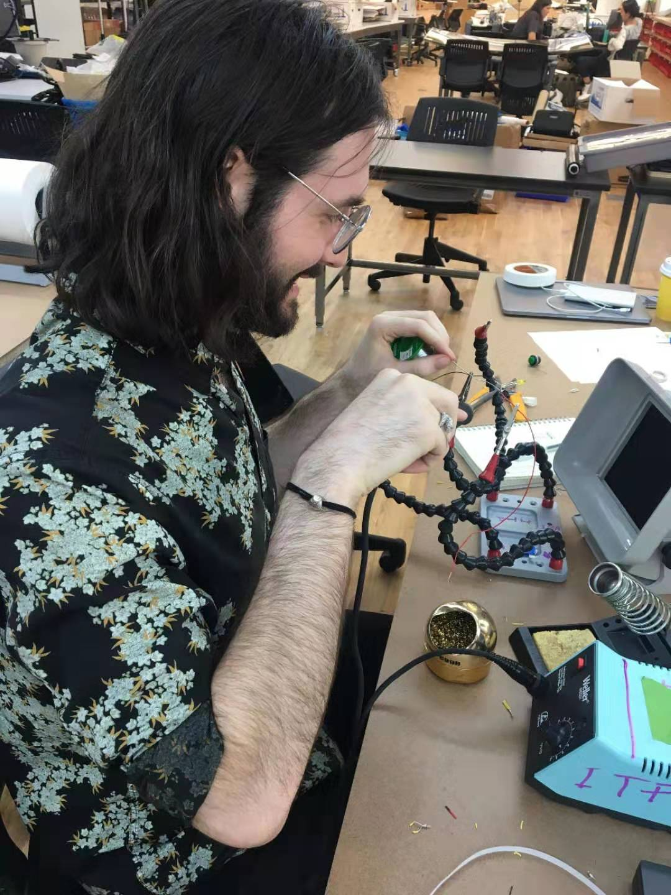
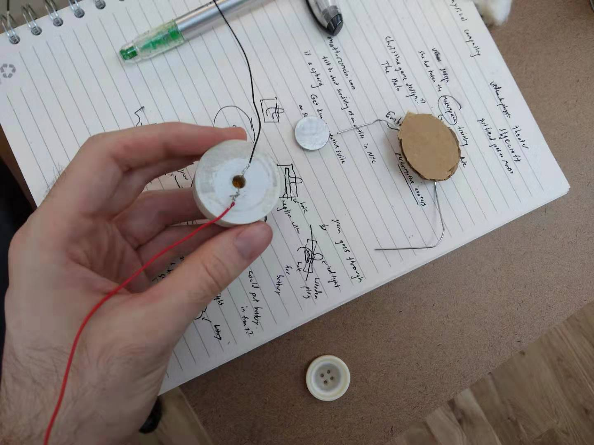
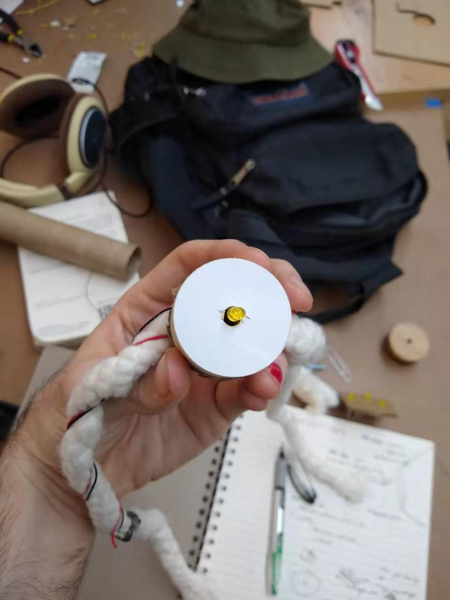
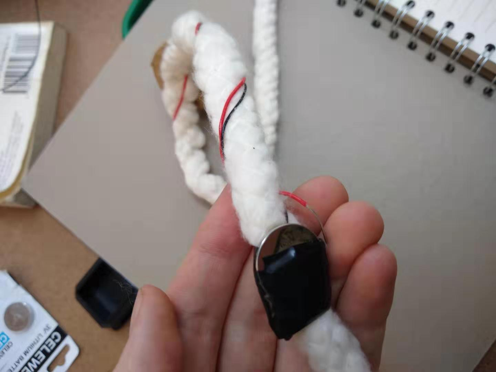

For our first project in Intro to Fabrication, we were asked to make a flashlight. The definition of a flashlight in this context was:
Something portable, which produces light.
I immediately set off for the Junk Shelf, which has a bunch of stuff that people have discarded for one reason or another, in the hopes that I could find something to inspire me (and also something I could use for free). Immediately, I found a tea light!! I thought this was super serendipitous, since if I could take it apart I already had something that could make light, which was useful because I didn't know the first thing about wiring.

Then I immediately forgot it in a cafe and had to come up with something new -- necessity is the mother of invention!
I played around with a couple of ideas in my head, most of which were based on the fact that we have free LEDs at ITP. I considered sticking them into a paper towel roll, or gluing some cardboard together, but those ideas seemed 1. incredibly boring 2. completely unrelated to the drilling we had done in class. During a meeting for the Sound and Video Comm Lab, my teammate Martin suggested I make some lumincescent headgear, which I thought was a great idea.
I started by grabbing a piece of discarded white wood and used a hole saw to drill out a plug of wood. While looking around the soft lab I saw a piece of white rope, so I grabbed that thinking I could attach the wooden plug to the rope and make a type of headband.
Meanwhile, I was playing around with LED and little coin batteries to figure out how wiring works. Since an LED fit pretty well in the hole the drill saw made in the wood, I thought I could put the LED in and then have the bottom parts wired to a battery somehow. To this end, I learned how to solder and soldered wires to the different ends of the LED.
 I also sanded down the plug of wood a bit, since the edges were kind of rough from the drilling.
After all this I hot glued a piece of cardboard over the wiring and then hot glued the rope to the back of the cardboard -- the headband was assembled!
However, I didn't actually have place to put the battery and complete the wiring, much less a way to switch it on and off. So, I kind of improvised. I taped the battery (with the negative end taped to the battery) to the rope on the right side, with the wiring round around one end. To turn on the light, you can take the positive wire and stick it into the battery-holder on the outside, thus completing the circuit. Not incredibly graceful, but the way the wiring wraps around the rope is kind of pretty.
At this point, the flashlight is finally done. Not only is it functional, but it makes a nice fashion statement.
Comments? Questions? Concerns? Email me here!